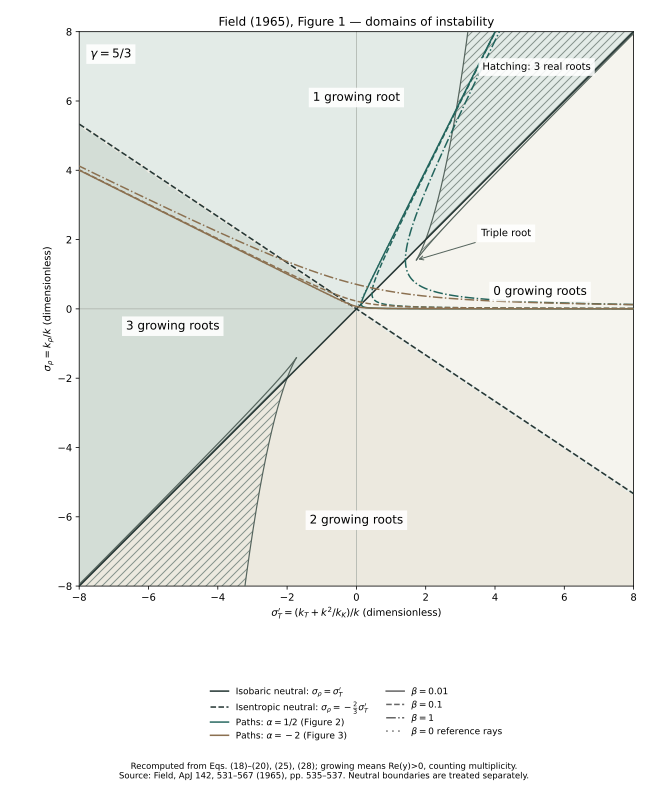

The neutral lines
The solid line σρ = σT′ has a zero root and is the isobaric neutral line. The dashed line σρ = −(γ − 1)σT′ has purely imaginary roots and is the isentropic neutral line.
Exhibit 03 / Field 1965 / Figure 1
The stability domains place condensation and acoustic growth in a common plane. Two straight neutral lines count growing roots; two hatched regions distinguish oscillation from non-oscillatory evolution.
Equation-based reconstruction, numerically validated. The presentation is modernized; there is no digitized pointwise comparison with the original printed figure.

Read the axes
Equation (17) defines y = n/(kc), σρ = kρ/k, and σT′ = kT/k + k/kK. The horizontal coordinate includes the positive thermal-conduction contribution. Both coordinates and y are dimensionless; c is the adiabatic sound speed.
Equation (18). This normalization uses kc; Figures 2 and 3 instead use kρc.
Two different boundaries
The solid line σρ = σT′ has a zero root and is the isobaric neutral line. The dashed line σρ = −(γ − 1)σT′ has purely imaginary roots and is the isentropic neutral line.
The discriminant boundary changes the character of the roots. Inside the hatching, all three roots are real and distinct. Outside, there is one real root and a complex conjugate pair. The hatching is not an additional instability threshold.
A growing root means Re(y) > 0. A complex conjugate pair with positive real part counts as two growing roots. Away from neutral lines, the count is:
Here 1[condition] is 1 when the condition is true, otherwise 0. On neutral lines the CSV leaves N blank, so zero-real-part roots are not classified by an off-boundary rule.
The discriminant
Write t = σT′ and r = σρ. Field’s equation (19) defines:
For this definition, D < 0 gives three real roots, while D > 0 gives a complex pair. The conventional cubic discriminant is −108D, with the opposite sign. Equation (20) supplies the thorn boundaries; their tips are triple roots at t = ±√3, r = (1 − γ/9)t.
One theory, three views
With q = k/kρ > 0, equation (28) gives r = 1/q and t = α/q + βq = αr + β/r. The green paths use α = 1/2, as in Figure 2; the brown paths use α = −2, as in Figure 3. Each family has β = 0.01, 0.1, 1, with dotted zero-conduction reference rays.
Increasing wavenumber moves toward smaller positive r. Conduction shifts the path to the right, where it can cross the neutral lines. The growth-rate normalization converts as x = qy. The validation checks this mapping using all three roots along each conducting path.
A path can cross the wave neutral line while condensation is still unstable. The map counts all growing roots; the wave cutoff in Figure 3 concerns only the acoustic pair.
Reproduce it
Save these three files together. The recorded environment uses Python 3.9.6, NumPy 2.0.2, and Matplotlib 3.9.4. No source PDF, external data, or local helper module is needed after installing dependencies.
python3 -m venv .venv
.venv/bin/python -m pip install -r requirements.txt
.venv/bin/python reproduce-map.py --output outputValidation and limits
All 15 checks passed. The validation report records the number of grid points tested, measured errors, tolerances, environment, and code hashes. The plotted grid has 161 × 161 points; numerical root checks use a separate grid.
The graph is reconstructed from the published equations, with modernized coloring, labels, and a legend. No quantitative error relative to digitized original boundaries is claimed. Repeated-root topology labels in the CSV use an absolute D tolerance of 10⁻¹⁰; neutral-line counts are blank.
George B. Field (1965), Thermal Instability, The Astrophysical Journal 142, 531–567. Figure 1; equations (17)–(28). Original paper at ADS ↗
The next planned chapter is the heating–cooling equilibrium and two-phase structure in FGH (1969).
Original implementation code is MIT. Text, figures and generated data have separate terms; see the Rights & reuse link below. The original paper’s rights are separate.